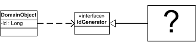

Plugin (Плагин)

Паттерн проектирования Plugin
Описание Plugin
Соединяет классы во время конфигурации, а не компиляции.
Паттерн Separated Interface (Выделенный интерфейс) часто используется, когда один код выполняется в нескольких средах и требует разной реализации отдельной логики. Большинство разработчиков добиваются этого при помощи использования шаблона фабрики. Представим, что надо генерировать первичный ключ при помощи паттерна Separated Interface (Выделенный интерфейс). Можно использовать для юнит-тестирования простой объект-счёчик, а на реальной системе - последовательность из БД. Фабричный метод скорее всего будет содержать условный переход (if), проверяющий, установлен ли флаг тестирования, и возвращать необходимый генератор ключа.
Как только у вас появится ещё несколько фабрик - начнётся путаница. Создание новой конфигурации, например "запуск юнит-тестов на БД без контроля транзакций" или "запуск в продакшн на DB2 с полной поддержкой транзакций", потребует правок в условиях в большом количестве фабрик, пересборку и переразвёртывание.
Конфигурация не должна быть разбросана по приложению, также как и требовать пересборки и переразвёртывания. Паттерн Plugin решает обе эти проблемы, предоставляя централизованную динамическую конфигурацию.
Использована иллюстрация с сайта Мартина Фаулера.